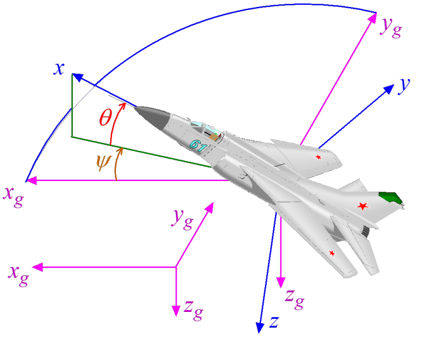
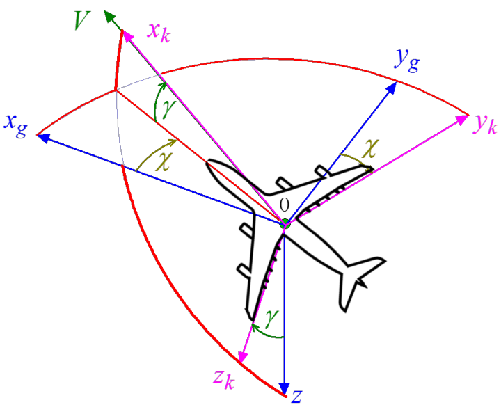
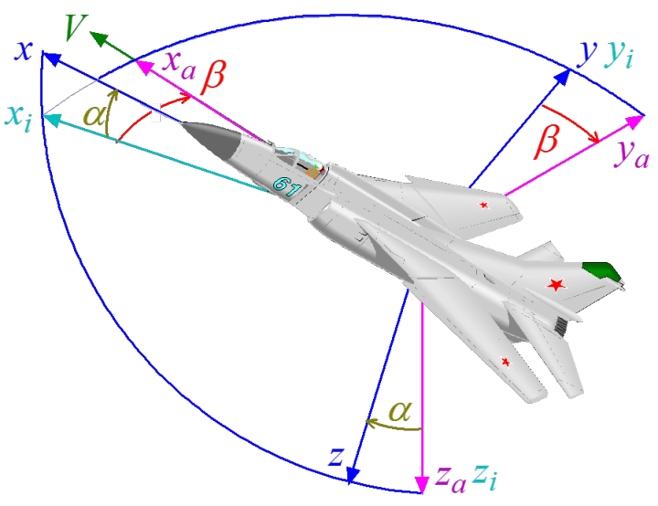
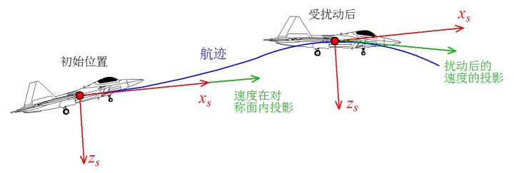

飞行力学中坐标系定义
建立飞机的运动学模型的前提是建立合适的坐标系，在此基础上才能定义各种参数描述飞机的状态。下面介绍常用的坐标系及常用描述飞机状态的参数。
常用坐标系
地面固定坐标轴系($AX_gY_gZ_g$)
将地球视为椭球体，则地面固定坐标轴系定义为：
以椭球面上一点为坐标系原点$A$，$Z_g$轴与椭球法线重合，向下为正，$X_g$与$Y_g$轴位于过坐标原地的椭球切平面上,按右手法则建立，$X_g$轴与椭球短半轴重合（北向），$Y_g$轴与地球椭球的长半轴重合（东向）。
在研究坐标转换关系时，常使用飞机牵连铅垂地面固定坐标系$OX_gY_gZ_g$。其原点$O$位于飞机质心，三坐标轴平行于地面固定坐标轴系$AX_gY_gZ_g$的各个轴。飞机姿态——偏航、俯仰、滚转的定义即与飞机牵连铅垂地面固定坐标系有关。
机体坐标系(体轴系$OXYZ$)
机体坐标系定义为：
原点$O$位于质心，$O_X$平行于机身轴线或对称面机翼弦线指向前方（机头方向）；$O_Y$垂直于对称面指向右翼；$O_Z$在飞机对称面内，垂直于$O_X$指向下方。符合右手系建立规定。

航迹坐标系($OX_kY_kZ_k$)
航迹坐标系定义：
原点$O$位于飞机质心，$OX_k$沿飞机速度方向；$OZ_k$在$OX_k$所在铅垂平面内，垂直于$OX_k$指向下方；$OY_k$垂直于$OX_k$、$OZ_k$ 所在平面指向右方；符合右手系建立规定。

气流坐标轴系(风轴系$OX_aY_aZ_a$)
气流坐标轴系又称速度坐标轴系，定义为：
原点$O$位于飞机质心，$OX_a$沿飞机速度方向；$OZ_a$在飞机对称面内，垂直于$OX_a$指向下方；$OY_a$垂直于$OX_a$、$OZ_a$ 所在平面指向右方；符合右手系建立规定。
气动力三个分量（升力、阻力、侧力）是根据风轴系定义的，其中升力与阻力分别沿$OZ_a$、$OX_a$的负向。
半机体坐标系($OX_iY_iZ_i$)
半机体坐标系定义为：
原点$O$位于质心，$OX_i$沿飞机速度向飞机对称面内投影方向；$OZ_i$在飞机对称面内，垂直于$OX_i$指向下方；$OY_i$垂直于$OX_i$、$OZ_i$ 所在平面指向右方；符合右手系建立规定。

稳定性坐标系($OX_sY_sZ_s$)
稳定性坐标系定义为：
原点$O$位于质心，$OX_s$沿未受扰动的速度在对称面内的投影方向；$OY_s$在飞机对称面内，指向右；$OZ_s$对称平面内垂直于$OX_s$向下；符合右手系建立规定。

常用飞参
机体坐标系相对于飞机牵连铅垂地面固定坐标系的夹角
- 偏航角：机体坐标系$x$轴在水平面内投影与$x_g$的夹角，以$\psi$表示
- 俯仰角：机体坐标系$x$轴与水平面的夹角，以$\theta$表示
- 滚转角：过机体坐标系$x$轴的铅垂面与机体坐标系$z$轴的夹角，以$\phi$表示
飞行速度矢量相对于体轴系的夹角
- 迎角：速度矢量在飞机纵向对称面内投影与机体坐标系$x$轴夹角，以$\alpha$表示
- 侧滑角：速度矢量与飞机纵向对称面的夹角，以$\beta$表示
飞行速度矢量相对于地面的夹角
- 爬升角：速度与地面水平面夹角，以$\gamma$表示
- 航迹方位角：速度在地面水平面的投影与$x_g$夹角，以$\chi$表示
参考链接
- 无人机飞控通俗演义之 纷繁复杂的飞行力学, by 量子黑洞.
- 一起写飞行仿真之 六自由度动力学方程, by 量子黑洞.
- 飞行器飞行动力学（二）坐标系与夹角们, by 萝卜.
- Cesium中飞行器姿态控制,by jack huang.
- MathJax 支持的 Latex 符号总结(希腊字母和希伯来字母),by liyuanbhu
- 空间中三维矢量,by tina_ttl.
- JSBSim学习笔记(3)—— 基本概念,by 么的聊.